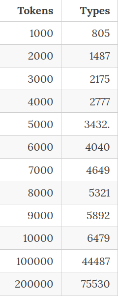
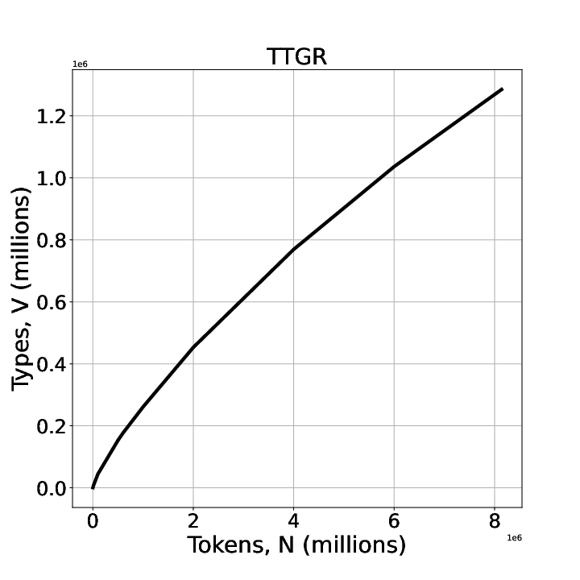
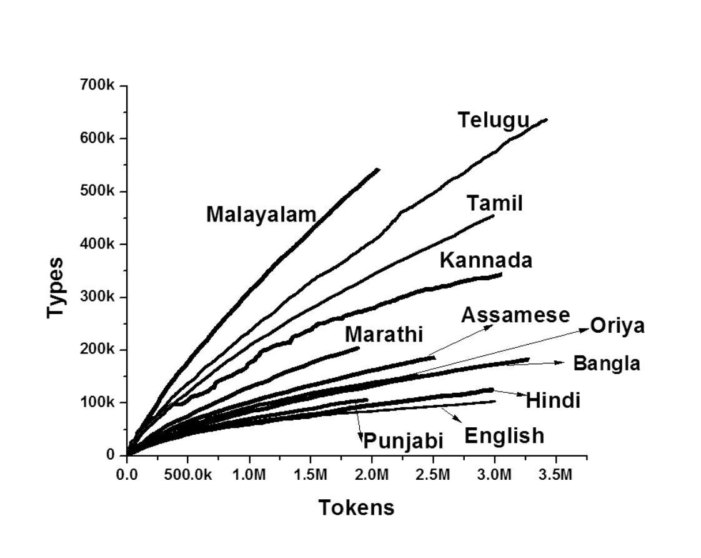
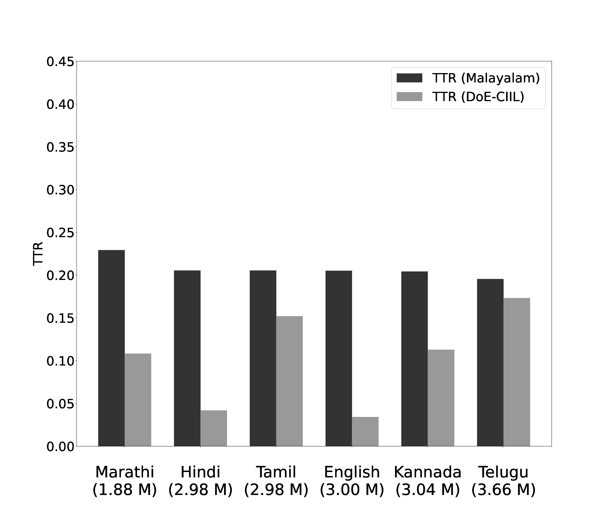
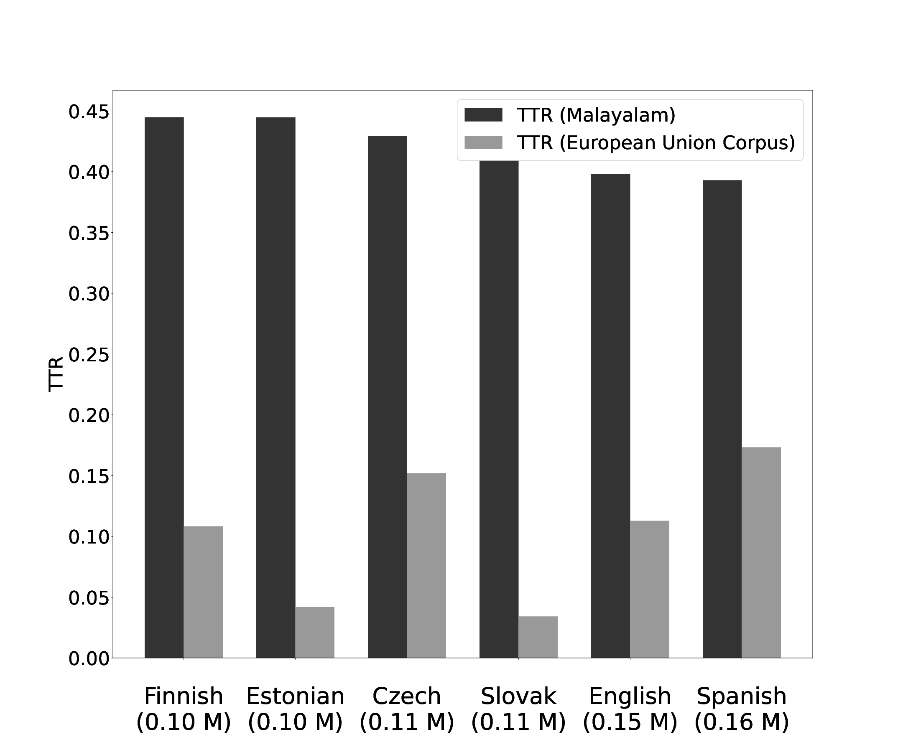

കമ്പ്യൂട്ടർ മനസ്സിലാക്കുന്ന മലയാളഭാഷ
ഡോ. കാവ്യ മനോഹർ
ഡിജിറ്റൽ ഉപകരണങ്ങളുടെ ഭാഷാശേഷി
നമ്മുടെ ആവശ്യങ്ങൾ പറഞ്ഞാൽ കമ്പ്യൂട്ടറിന് മനസ്സിലാകുമോ?
വാക്കുകൾ, വാചകങ്ങൾ, അർത്ഥം, സന്ദർഭം, പൊരുത്തം
Call me 'Kavya'
Call me 'at 5:00 am'
മലയാളത്തിലെത്ര വാക്കുകൾ?
എന്താണ് വാക്ക്?
Morphological Richness
വാക്കുകളുടെ വൈവിധ്യം അളക്കാനാകുമോ?
ഇന്റർനെറ്റ് അധിഷ്ഠിത പാഠശേഖരങ്ങൾ (Text Corpus)
ആകെ വാക്കുകളിൽ
ആവർത്തിക്കുന്ന വാക്കുകളെത്ര?
ആവർത്തനത്തിന്റെ തോതെത്രെ?
അനന്യമായ വാക്കുകളെത്ര?
Type Token Growth Rate
Type Token Growth Rate
Type Token Growth Rate
Type Token Ratio
Type Token Ratio
ഏറ്റവും കൂടുതൽ ആവർത്തിക്കപ്പെടുന്ന പദമേതാണ്?
ഏറ്റവും കുറവ് ആവർത്തിക്കപ്പെടുന്ന പദമേതാണ്?
Indic NLP Corpus
ഒരു
ഈ
എന്ന
തന്നെ
Indic NLP Corpus
ഒരു-1403164
ഈ-913181
എന്ന-565221
തന്നെ-443751
അവധിയാഘോഷിച്ചിരുന്നത്
ഇറങ്ങിയിരിക്കുന്നതരത്തിൽ
ക്യാബിനിലാണ്
സ്നേഹിക്കുന്നതെല്ലാം
മൂന്നുകിലോയുടെ
മലയാളഭാഷയും ആർട്ടിഫിഷൽ ഇന്റലിജൻസും
സമസ്തപദങ്ങളിലെ ഘടകങ്ങൾ: 'ഓന്തി!!', 'ചായ!!'
വാക്കുകളുടെ അർത്ഥം കമ്പ്യൂട്ടർ പഠിക്കുന്നതെങ്ങനെ?
അർത്ഥം പദവിന്യാസത്തിലൂടെ
Distributional Semantics
Word Embeddings
Source: https://www.baeldung.com/cs/dimensionality-word-embeddings
Image By: Santhosh Thottingal
കേരളം + തലസ്ഥാനം = തിരുവനന്തപുരം
കർണാടക + ( കേരളം - തിരുവനന്തപുരം) = ?

Source: https://jalammar.github.io/illustrated-word2vec/
വാക്കുകളും വാചകങ്ങളും അക്കങ്ങളായി മാറുന്നു.
93% of GPT-3’s data set was in English
0.00165% was in Malayalam